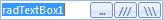

Adding Buttons to RadTextBox
Telerik UI for WinForms are based on a special framework called
Telerik Presentation Framework.
This framework allows for great customizations in the element structure of a control.
The purpose of this article is to demonstrate how you can easily add buttons to RadTextBox.

Adding buttons to RadTextBox
In this particular case we are going to add three buttons to RadTextBox:
- First, let's create three buttons. In order to arrange
them in stacked formation, we need to add them to a
StackLayoutPanel
element:
[C#]
RadButtonElement button = new RadButtonElement();
button.Click += new EventHandler(button_Click);
button.Padding = new Padding(2, 0, 2, -2);
button.Margin = new Padding(0, 0, 0, 0);
button.Text = "...";
RadButtonElement button2 = new RadButtonElement();
button2.Click += new EventHandler(button_Click);
button2.Padding = new Padding(2, 0, 2, -2);
button2.Margin = new Padding(1, 0, 2, 0);
button2.Text = "///";
RadButtonElement button3 = new RadButtonElement();
button3.Click += new EventHandler(button_Click);
button3.Padding = new Padding(2, 0, 2, -2);
button3.Margin = new Padding(1, 0, 1, 0);
button3.Text = @"\\\";
StackLayoutElement stackPanel = new StackLayoutElement();
stackPanel.Orientation = Orientation.Horizontal;
stackPanel.Margin = new Padding(1, 0, 1, 0);
stackPanel.Children.Add(button);
stackPanel.Children.Add(button2);
stackPanel.Children.Add(button3);
[VB.NET]
Dim button As New RadButtonElement()
AddHandler button.Click, AddressOf button_Click
button.Padding = New Padding(2, 0, 2, -2)
button.Margin = New Padding(0, 0, 0, 0)
button.Text = "..."
Dim button2 As New RadButtonElement()
AddHandler button2.Click, AddressOf button_Click
button2.Padding = New Padding(2, 0, 2, -2)
button2.Margin = New Padding(1, 0, 2, 0)
button2.Text = "///"
Dim button3 As New RadButtonElement()
AddHandler button3.Click, AddressOf button_Click
button3.Padding = New Padding(2, 0, 2, -2)
button3.Margin = New Padding(1, 0, 1, 0)
button3.Text = "\\\"
Dim stackPanel As New StackLayoutElement()
stackPanel.Orientation = Orientation.Horizontal
stackPanel.Margin = New Padding(1, 0, 1, 0)
stackPanel.Children.Add(button)
stackPanel.Children.Add(button2)
stackPanel.Children.Add(button3)
'#End Region
'#Region "dockLayoutPanel"
Dim tbItem As RadTextBoxItem = Me.RadTextBox1.TextBoxElement.TextBoxItem
Me.RadTextBox1.TextBoxElement.Children.Remove(tbItem)
Dim dockPanel As New DockLayoutPanel()
dockPanel.Children.Add(stackPanel)
dockPanel.Children.Add(tbItem)
DockLayoutPanel.SetDock(tbItem, Telerik.WinControls.Layouts.Dock.Left)
DockLayoutPanel.SetDock(stackPanel, Telerik.WinControls.Layouts.Dock.Right)
Me.RadTextBox1.TextBoxElement.Children.Add(dockPanel)
'#End Region
'#Region "finalPadding"
Me.RadTextBox1.TextBoxElement.Padding = New Padding(1, 1, 1, 1)
tbItem.Margin = New Padding(0, 1, 0, 0)
'#End Region
End Sub
'#Region "clickHandler"
Private Sub button_Click(ByVal sender As Object, ByVal e As EventArgs)
Dim button As RadButtonElement = TryCast(sender, RadButtonElement)
RadMessageBox.Show("Clicked! " & button.Text)
End Sub
'#End Region
End Class
As you can see, we are also setting Padding of the buttons. This allows us to set some size
to these buttons bigger than the default one. In addition, we are setting Margin of the buttons,
so that there is some space between them.
- Now we should place the StackLayoutPanel in RadTextBox. In order to achieve the proper layout between the textbox part of RadTextBox and the buttons, we need to put the item responsible for the textbox part and the StackLayoutPanel in a DockLayoutPanel:
[C#]
RadTextBoxItem tbItem = this.radTextBox1.TextBoxElement.TextBoxItem;
this.radTextBox1.TextBoxElement.Children.Remove(tbItem);
DockLayoutPanel dockPanel = new DockLayoutPanel();
dockPanel.Children.Add(stackPanel);
dockPanel.Children.Add(tbItem);
DockLayoutPanel.SetDock(tbItem, Telerik.WinControls.Layouts.Dock.Left);
DockLayoutPanel.SetDock(stackPanel, Telerik.WinControls.Layouts.Dock.Right);
this.radTextBox1.TextBoxElement.Children.Add(dockPanel);
[VB.NET]
Dim tbItem As RadTextBoxItem = Me.RadTextBox1.TextBoxElement.TextBoxItem
Me.RadTextBox1.TextBoxElement.Children.Remove(tbItem)
Dim dockPanel As New DockLayoutPanel()
dockPanel.Children.Add(stackPanel)
dockPanel.Children.Add(tbItem)
DockLayoutPanel.SetDock(tbItem, Telerik.WinControls.Layouts.Dock.Left)
DockLayoutPanel.SetDock(stackPanel, Telerik.WinControls.Layouts.Dock.Right)
Me.RadTextBox1.TextBoxElement.Children.Add(dockPanel)
'#End Region
'#Region "finalPadding"
Me.RadTextBox1.TextBoxElement.Padding = New Padding(1, 1, 1, 1)
tbItem.Margin = New Padding(0, 1, 0, 0)
'#End Region
End Sub
'#Region "clickHandler"
Private Sub button_Click(ByVal sender As Object, ByVal e As EventArgs)
Dim button As RadButtonElement = TryCast(sender, RadButtonElement)
RadMessageBox.Show("Clicked! " & button.Text)
End Sub
'#End Region
End Class
- We are setting some Margin and Padding properties to the elements of RadTextBox which centers the buttons and the text vertically:
[C#]
this.radTextBox1.TextBoxElement.Padding = new Padding(1, 1, 1, 1);
tbItem.Margin = new Padding(0, 1, 0, 0);
[VB.NET]
Me.RadTextBox1.TextBoxElement.Padding = New Padding(1, 1, 1, 1)
tbItem.Margin = New Padding(0, 1, 0, 0)
'#End Region
End Sub
'#Region "clickHandler"
Private Sub button_Click(ByVal sender As Object, ByVal e As EventArgs)
Dim button As RadButtonElement = TryCast(sender, RadButtonElement)
RadMessageBox.Show("Clicked! " & button.Text)
End Sub
'#End Region
End Class
- To complete the scenario, here is the event handler implementation for the Click event:
[C#]
void button_Click(object sender, EventArgs e)
{
RadButtonElement button = sender as RadButtonElement;
RadMessageBox.Show("Clicked! " + button.Text);
}
[VB.NET]
Private Sub button_Click(ByVal sender As Object, ByVal e As EventArgs)
Dim button As RadButtonElement = TryCast(sender, RadButtonElement)
RadMessageBox.Show("Clicked! " & button.Text)
End Sub
'#End Region
End Class
This is it! Now you have a good-looking RadTextBox with buttons!